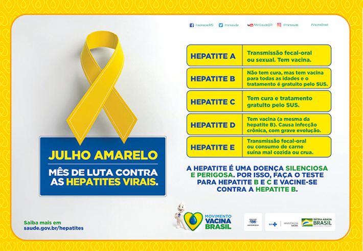
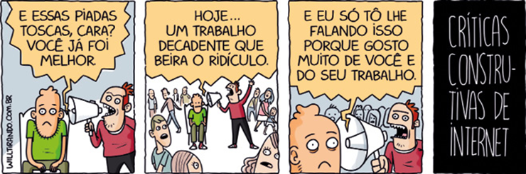
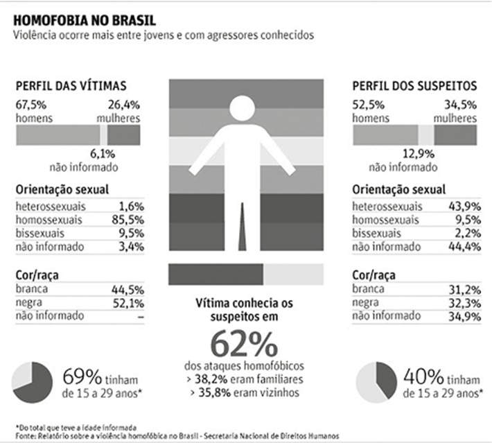
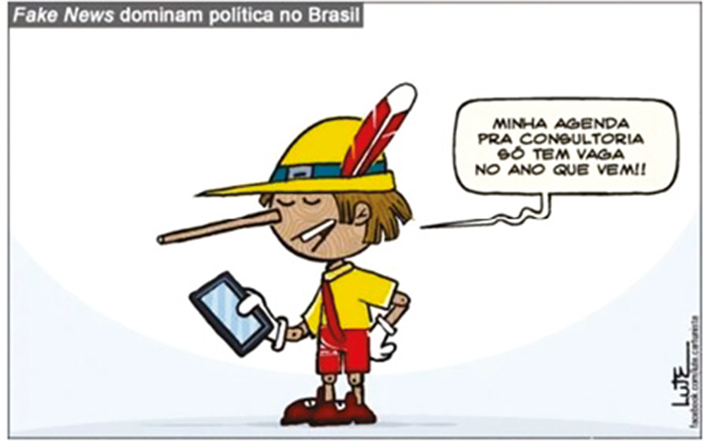

Os sintagmas nominais são construídos de acordo com a finalidade do texto
Ministério da Justiça e Segurança Pública/Governo Federal do Brasil
Neste capítulo, vamos retomar diferentes construções nominais, ou seja, aquelas que têm como núcleo um substantivo ou um pronome. Aprofundaremos aspectos relacionados a termos sintáticos que se vinculam ao substantivo (ou palavra substantivada), como adjunto adnominal, complemento nominal, predicativo e aposto.
Nos textos, essas construções despertam em nosso pensamento referências, entre outras coisas, a seres, lugares, sentimentos, processos – sejam reais, sejam fictícios. As expressões nominais são, portanto, fundamentais para compreendermos o núcleo informacional dos textos que produzimos. No anúncio institucional acima, por exemplo, as construções nominais empregadas se articulam à finalidade do texto, estabelecendo uma série de implícitos. Analise-o e faça o que se pede a seguir.
- Especifique a finalidade comunicativa do anúncio.
- Relacione essa finalidade às escolhas linguísticas apresentadas no anúncio, tendo como foco as construções com núcleo nominal.
- Especifique a finalidade comunicativa do anúncio.
- Relacione essa finalidade às escolhas linguísticas apresentadas no anúncio, tendo como foco as construções com núcleo nominal.
Neste capítulo, serão abordadas as habilidades EM13LP01, EM13LP02, EM13LP08.
Vamos analisar outro anúncio institucional, também com temática de interesse coletivo:
Campanha nacional de vacinação contra as hepatites virais.
Ministério da Saúde/Governo Federal do Brasil
Nesse anúncio, podemos observar o uso da cor como estratégia persuasiva, articulando-se a termos específicos. Pensando nisso, responda às questões em seu caderno.
- Observando as construções nominais, explique que estratégias visuais e verbais são empregadas no anúncio para chamar a atenção do leitor.
- Você considera que campanhas de vacinação como essa ainda são eficientes? Por quê?
- Com os colegas, discuta alguma forma de intervenção que possa combater as notícias falsas relacionadas a questões de saúde e vacinação.
Adjunto adnominal
Na abertura e na seção “Texto e contexto”, você refletiu sobre diferentes construções nominais. Agora, vamos especificar alguns termos que as compõem. O primeiro deles é o adjunto adnominal, que se relaciona ao substantivo (ou palavra substantivada), cuja finalidade é delimitar, especificar, ou caracterizar o sentido deste. Pronomes, artigos, numerais e adjetivos podem atuar nessa função, conforme vimos em capítulos anteriores. Observe a tira a seguir.
Podemos notar o emprego de algumas expressões nominais nessa tirinha de Will Leite.
Will Leite - willtirando.com.br
Nesses quadrinhos, foi criado um efeito de humor baseado na ironia que se constrói pelo título nominal “Críticas construtivas de internet”. Veja, nos quadros a seguir, essa e outras expressões nominais empregadas na tira.
| Adjunto adnominal | Núcleo nominal | Adjunto adnominal |
|---|---|---|
| Essas | piadas | toscas |
| pronome | substantivo | adjetivo |
| Um | trabalho | decadente |
| artigo | substantivo | adjetivo |
| Núcleo nominal | Adjunto adnominal | Adjunto adnominal |
|---|---|---|
| Críticas | construtivas | de internet |
| substantivo | adjetivo | locução adjetiva |
Complemento nominal
Assim como há verbos que necessitam de complemento verbal, existem nomes que também não apresentam sentido pleno, exigindo, portanto, complemento nominal. Leia a chamada da reportagem de capa da revista Radis, publicação mantida pela Fundação Oswaldo Cruz.
Na pergunta dessa capa de revista, foi empregado um complemento nominal.
Reprodução
Na sentença interrogativa “Quem tem medo da vacina?”, o substantivo “medo” exige o emprego do complemento nominal “da vacina”. O complemento nominal é sempre introduzido por preposição e representa o destinatário da ideia indicada por um substantivo, adjetivo ou advérbio.

Fundação Oswaldo Cruz.
O portal da Fundação Oswaldo Cruz, além de concentrar a discussão de temas ligados à área da saúde, também apresenta informações detalhadas sobre os serviços prestados pelo conjunto das unidades da Fiocruz, no âmbito do Sistema Único de Saúde (SUS) e do Ministério da Saúde. A temática da saúde pode ser plenamente explorada a partir de várias publicações disponíveis no site.
Disponível em: <https://portal.fiocruz.br>.
Para diferenciar um adjunto adnominal de um complemento nominal, é importante lembrar que, em termos de construção linguística, o adjunto adnominal configura-se como um termo acessório, ligado sempre a um núcleo nominal (substantivo ou palavra com valor de substantivo). Trata-se de um elemento a mais, pois não é responsável pelo núcleo informacional básico na construção de uma sentença. Já o complemento nominal participa da construção do sentido básico da sentença, pois, sendo um termo integrante, relaciona-se a uma palavra (substantivo, adjetivo ou advérbio) que necessita de complemento informacional para tornar a construção linguística coerente. Observe os exemplos a seguir.
- A divulgação de campanhas de vacinação é fundamental.
- O programa de imunizações brasileiro é reconhecido internacionalmente.
Na primeira sentença, o substantivo abstrato “divulgação” não apresenta sentido completo, necessitando de complemento nominal, “de campanhas de vacinação”, que apresenta um valor passivo em relação ao nome que completa, “campanhas são divulgadas”. O complemento nominal sempre será introduzido por preposição, completando o sentido de substantivos abstratos, adjetivos e advérbios. Note que os termos “a” e “de vacinação” atuam como adjuntos adnominais.
Na segunda sentença, o substantivo “programa” não apresenta sentido incompleto; assim, os termos “o”, “de imunizações” e “brasileiro” atuam como adjuntos adnominais, pois acrescentam uma especificação ao núcleo nominal.
Os adjuntos nominais podem ser representados por artigos, adjetivos, pronomes, numerais e expressões preposicionadas. Além disso, podem indicar posse, apresentando um valor ativo, diferentemente do complemento nominal. Observe:
- A leitura do aluno foi bastante detalhada. (adjunto adnominal)
- A leitura do livro foi bastante detalhada. (complemento nominal)
| Complemento nominal | Adjunto adnominal | |
|---|---|---|
| A preposição é | obrigatória. | usada em determinadas construções. |
| Apresenta | valor passivo, pois é o termo sobre o qual recai a ideia de ação expressa pelo núcleo nominal ao qual se refere. | valor ativo, pois demarca o agente da ação expressa pelo núcleo nominal que acompanha. |
| Semanticamente | nunca demarca posse. | pode indicar posse. |
| Relaciona-se com | substantivos abstratos, adjetivos e advérbios. | substantivos concretos ou abstratos. |
Predicativos
Predicativo é o termo que se refere ao sujeito ou ao objeto para caracterizá-lo. Leia os dois títulos jornalísticos a seguir.

ABRAS, Roberto. O Tempo, 5 fev. 2019.

SOARES, Thiago. Correio Braziliense, 20 ago. 2017.
No primeiro título, há verbo de ligação, “está”, seguido de termo que caracteriza o sujeito, “preparado”, sendo denominado predicativo do sujeito o núcleo informacional do predicado nominal.
No segundo, há dois núcleos informacionais: um verbo significativo, “deixam”, e um predicativo do objeto, “mais charmosa”. Isso ocorre porque o título está organizado a partir de duas ideias: Floradas de ipês-amarelos deixam Brasília + Brasília fica mais charmosa = “Floradas de ipês-amarelos deixam Brasília mais charmosa”.
Haverá predicativo, portanto, quando o predicado for nominal ou verbonominal, representando um núcleo informacional na sentença. Veja mais exemplos:

Como podemos observar, o predicativo do sujeito é uma característica atribuída ao sujeito, e o predicativo do objeto, ao objeto. Em algumas situações, é comum confundir predicativo com adjunto adnominal. Vamos observar e descrever algumas diferenças sintáticas e semânticas nas construções a seguir.
| Adjunto adnominal | Predicativo do sujeito |
|---|---|
| Alguém apressado passou por mim. | João passou por mim apressado. |
| Ele passou por mim. | Ele passou por mim apressado. |
Note que o adjunto adnominal forma um sintagma com o núcleo nominal que acompanha, não dependendo do processo verbal (“Alguém apressado”). Por conta disso, em um procedimento de retomada em um texto, ele se tornaria implícito ao ser substituído por um pronome (ele = alguém apressado). Já o predicativo do sujeito não participa do mesmo sintagma do núcleo nominal a que faz referência, sendo dependente do processo verbal. Com isso, ao substituir o termo a que se liga por um pronome, o predicativo do sujeito mantém-se explícito na frase.
Com o predicativo do objeto, a substituição pelo pronome pessoal oblíquo também permite compreender sua distinção do adjunto adnominal. Veja:
- Cada detalhe deixou a festa memorável.
- Cada detalhe deixou-a memorável.
Nesse caso, o predicativo do objeto também permanece explícito na construção com o pronome.
| Adjunto adnominal | Predicativo | |
|---|---|---|
| Estabelece uma relação | direta com o substantivo. | mediada por um verbo. |
| Por isso | não depende do processo verbal. | a caracterização depende do processo verbal. |
| Isso ocorre porque | forma um sintagma com o núcleo nominal ao qual se refere. | não participa do mesmo sintagma do núcleo nominal ao qual se refere. |
| Em textos | torna-se implícito quando o núcleo nominal que acompanha é substituído por um pronome. | mantém-se explícito quando o núcleo nominal ao qual se refere é substituído por um pronome. |
| Semanticamente | pode ser usado para expressar características próprias do núcleo nominal. | pode ser usado para expressar características momentâneas ou que dependem de um processo verbal. |
Aposto
Vamos ler o excerto inicial da reportagem de capa da revista Radis, analisada anteriormente. Observe os termos destacados.
E agora, Zé?
Baixa cobertura das principais vacinas compromete programa brasileiro de imunizações, reconhecido internacionalmente
Pela primeira vez, o Zé Gotinha não sorri. A personagem – conhecida pelo sorriso simpático que a torna cativante para as crianças, desde que foi criada, em 1986 – aparece com a expressão triste e preocupada nas peças publicitárias da campanha divulgada pelo Ministério da Saúde em outubro de 2018. O motivo: as baixas coberturas alcançadas para as principais vacinas do Calendário Nacional de Vacinação representam uma ameaça real de retorno de doenças comuns no passado, como o sarampo e a poliomielite (paralisia infantil). As feições descontentes da personagem traduzem uma inquietação que também incomoda profissionais e estudiosos da saúde: por que o Brasil – que tem um Programa Nacional de Imunizações (PNI) reconhecido internacionalmente – vive um contexto em que aumenta a parcela da população sem vacinação adequada? [...]
STEVANIM, Luiz Felipe. “E agora, Zé?”. RADIS, Rio de Janeiro, n. 196, p. 10, jan. 2019. Disponível em: <https://radis.ensp.fiocruz.br/phocadownload/revista/Radis196_web.pdf>. Acesso em: 20 ago. 2021.
No texto, as frases destacadas estão isoladas com travessões ou são introduzidas após o sinal de dois-pontos. Elas têm a função de especificar, detalhar e explicar um termo anterior, no caso “personagem”, “motivo” e “inquietação”, respectivamente. O aposto é um termo acessório que apresenta essa mesma função: articular-se a um núcleo nominal (substantivo ou pronome) para explicá-lo ou especificá-lo.
Em geral, o aposto é separado dos demais termos por vírgulas ou travessão ou, ainda, introduzido após os dois-pontos. Ele restringe o valor semântico de um núcleo nominal (substantivo, pronome ou termo com função equivalente), podendo ser de diferentes tipos:
- Explicativo: Encontrei o Cássio, irmão do meu chefe, na lanchonete.
- Enumerativo: Preciso de vários materiais: papel, tesoura, cola, clipes, envelope etc.
- Especificativo: Estivemos na Avenida 23 de Março.
- Comparativo: Sua voz, uma filarmônica, ecoava pela casa.
- Recapitulativo: Saúde, educação, segurança, direitos que devem ser assegurados.
1
Uece 2014
PORTÃO
O portão fica bocejando, aberto
para os alunos retardatários.
Não há pressa em viver
nem nas ladeiras duras de subir,
quanto mais para estudar a 1insípida cartilha.
Mas se o pai do menino é da oposição,
À ilustríssima autoridade municipal,
prima por sua vez da sacratíssima
autoridade nacional,
ah, isso não: o vagabundo
ficará mofando lá fora
e leva no boletim uma galáxia de zeros.
A gente aprende muito no portão
fechado.
ANDRADE, Carlos Drummond de. In: Carlos Drummond de Andrade: Poesia e Prosa. Editora Nova Aguilar: 1988. p. 506-507.
Atente ao que é dito sobre o vocábulo “insípida” (ref. 1).
- Foi empregado na acepção de sem graça, desinteressante, monótono.
- Foi empregado no seu sentido literal, não figurado.
- A mudança da posição desse adjetivo para depois do substantivo não alteraria o significado do substantivo.
Está correto o que se afirma somente em
- I e II.
- III.
- I e III.
- II.
Texto para a questão 2.
Disponível em: <http://www.muza.com.br/2012/07/divulgado-relatorio-sobre-homofobia-no.html>. Acesso em: 27 set. 2018.
2
IFPE 2019 No texto, as locuções adjetivas “das vítimas” e “dos suspeitos” acompanham o substantivo “perfil”, desempenhando a função sintática de
- agente da passiva, haja vista que atribuem uma agentividade a esse substantivo.
- predicativo do sujeito, porque apresentam uma qualidade para esse substantivo.
- adjunto adnominal, pois delimitam o significado desse substantivo.
- predicativo do objeto, já que apontam uma avaliação sobre esse substantivo.
- aposto especificativo, uma vez que são hipônimos desse substantivo.
3
CMRJ 2018 (Adapt.)
Fiu-fiu
Luis Fernando Verissimo
Existe coisa mais melancólica do que uma mesa de quatro pessoas, num restaurante, em que três estão dedilhando seus smartphones e uma está falando sozinha?
Lançaram agora um celular à prova d’água, que você pode usar no chuveiro. Ou em qualquer outro lugar embaixo d’água. No mar, por exemplo. [...]
São cada vez mais raros os lugares em que você pode se ver livre de celulares, e agora nem as piscinas estão seguras.
Os celulares são práticos e se tornaram indispensáveis, eu sei, mas empobreceram a vida social. Existe coisa mais melancólica do que uma mesa de quatro pessoas, num restaurante, em que três estão dedilhando seus smartphones e uma está falando sozinha? Ou um casal em outra mesa, os dois mergulhados nos respectivos celulares sem nem se olharem, o que dirá se falarem – a não ser que estejam trocando mensagens silenciosas entre si, o que é ainda mais triste.
Os celulares podem ser perigosos de várias maneiras, mesmo que não derretam o cérebro, como se andou espalhando há algum tempo. Imagino uma velhinha que ganhou um celular dos netos sem que estes se dessem ao trabalho de explicar seu funcionamento para a vovó. Não contaram, por exemplo, que o celular dado assobia quando recebe uma mensagem. É um assovio humano, um nítido fiu-fiu avisando que alguém ligou, e que pode soar a qualquer hora do dia ou da noite. E imagino a vovó, que mora sozinha, dormindo e, de repente, acordando com o assovio. Um fiu-fiu no meio da noite! A vovó, se não morrer imediatamente do coração, pode ficar apavorada. Quem está lá? Um ladrão ou um fantasma assoviador? E o assovio tem algo de galante. A vovó pode muito bem sair da cama, sem saber se está acordada ou sonhando, e caminhar na direção do fiu-fiu sedutor, como se tivessem vindo buscá-la. Alguém pensou nas vovós solitárias quando inventou o assovio?
O fato é que não há mais refúgio. Nem castelos anti-smartphones com um fosso em volta. Eles agora podem atravessar o fosso.
Jornal O Globo, 3/8/2014. Disponível em <https://oglobo.globo.com/opiniao/fiu-fiu-13464128>. Último acesso em 30 de setembro de 2017.
O termo “fiu-fiu” aparece três vezes no penúltimo parágrafo do texto. Que recurso estilístico ele representa e que funções sintáticas assume nas três ocorrências, respectivamente?
- Onomatopeia; núcleo do sujeito, parte de frase nominal, núcleo do complemento nominal.
- Prosopopeia; núcleo do aposto, núcleo do sujeito, núcleo do adjunto adnominal.
- Interjeição; núcleo do sujeito, parte de frase nominal, núcleo do adjunto adnominal.
- Metonímia; núcleo do aposto, núcleo do sujeito, núcleo do complemento nominal.
- Eufemismo; núcleo do sujeito, núcleo do objeto direto, núcleo do adjunto adnominal.
Texto para a questão 4.
Nós estamos num estado comparável somente à Grécia: mesma pobreza, mesma indignidade política, mesma trapalhada econômica, mesmo abaixamento de caracteres, mesma decadência de espírito. Nos livros estrangeiros, nas revistas quando se fala num país caótico e que pela sua decadência progressiva, poderá ...vir a ser riscado do mapa da Europa, citam-se a par, a Grécia e Portugal.
Queirós, Eça de. As Farpas. 1872.
4
Insper-SP Em “Nós estamos num estado comparável somente à Grécia”, o termo grifado exerce a função de:
- predicativo do sujeito
- complemento nominal
- adjunto adnominal
- aposto
- adjunto adverbial
5
UPE/SSA 2017 (Adapt.)
COMPREENDER O BRASIL É DIFÍCIL, MAS NÃO IMPOSSÍVEL
Ouvimos muitos comentários de analistas sociais e também do senso comum (sobretudo) de que o grande mal do Brasil é o “jeitinho brasileiro”, que é atrelado à corrupção. Pois bem, a observação não é de todo errada, mas esconde outro truísmo aparente. Os males do Brasil enquanto nação e enquanto Estado assentam-se em dois pilares: o genocídio indígena e a escravidão africana.
Advém daí o machismo e a cultura do estupro: as índias foram as primeiras a serem violentadas pelo colonizador europeu, o que acabou naturalizando essa abominável prática de invasão do corpo do outro, tempos depois aplicando-se o mesmo “método” no corpo da mulher negra e da mulher branca. Os escravocratas, em uma sociedade patriarcal, tornaram legítima também a decisão sobre o corpo da mulher, inclusive da sua esposa: bela, recatada e do lar, e da sua ama de leite (a mãe preta), cujo leite afro acalentava seu filho branco.
Advém daí o racismo: o colonizador branco, com a chancela da religião cristã e da ciência, arrogou para si a superioridade racial branca, em detrimento do negro, do indígena e do asiático. Nem o questionável 13 de maio nem o estado democrático de direito superou isso. Isso é reproduzido hoje em nível societário. Quem mais morre nas periferias das cidades brasileiras são negros. Alguém cantou num passado recente “todo camburão tem um pouco de navio negreiro”.
Advém daí o paternalismo: transplantamos para nossas relações humanas as antigas relações típicas de senhor escravo, não na acepção nietzschiana (moral do senhor/moral do escravo), mas na acepção eugênica herdada do darwinismo social de Spencer, que hierarquizou as raças, estando essas associadas ao processo civilizatório de aculturação do indígena, método descrito de forma primorosa por Alfredo Bosi em “As flechas do Sagrado”. [...]
Advém daí o genocídio negro: desde 1982 até 2014 foram 1,2 milhões de negros mortos pela polícia nas periferias, dados da Anistia Internacional. [...]
Advém daí o genocídio indígena, ainda em curso. Ruralistas e posseiros o fazem à luz do dia no Norte e Centro-Oeste do país. A imprensa fala pouco, o silêncio cemiterial em torno do tema é um crime confesso, típico de quem consente porque se cala.
Advém daí a corrupção, pois, no processo colonizatório, legitimou-se a prática de que tudo tem seu preço, quando até mesmo o corpo do outro poderia ser negociado, outrora o escravizado, tempos depois o trabalhador fabril, hoje qualquer alma vulnerável ao consumismo em busca de status.
Resumo da ópera: a corrupção é um subciclo de dois ciclos maiores: genocídio e escravidão. Por isso esses dois temas interessam a todos os brasileiros. Enquanto não encararmos isso, não avançaremos como povo ou como nação.
Victor Martins. Disponível em: <http://www.circulopalmarino.org.br/2016/05/compreender-o-brasil-e-dificil-mas-nao-impossivel>. Acesso em: 14/07/16. Adaptado.
No que se refere a alguns aspectos formais presentes no texto, analise as proposições a seguir.
- No trecho: “[...] e da sua ama de leite (a mãe preta), cujo leite afro acalentava seu filho branco.” (2º parágrafo), a substituição da forma verbal ‘acalentava’ por ‘nutria’ acarretará a seguinte alteração na regência: ‘[...] e da sua ama de leite (a mãe preta), em cujo leite afro nutria seu filho branco.’.
- No trecho: “Quem mais morre nas periferias das cidades brasileiras são negros.” (3º parágrafo), a forma verbal destacada está no plural em concordância com o predicativo plural ‘negros’.
- No trecho: “Ouvimos muitos comentários [...] de que o grande mal do Brasil é o ‘jeitinho brasileiro’, que é atrelado à corrupção.” (1º parágrafo), o sinal indicativo de crase é opcional, já que o verbo ‘atrelar’, no contexto em que se insere, pode também ser transitivo direto.
- O segmento destacado no trecho: “Ruralistas e posseiros o fazem à luz do dia no Norte e Centro-Oeste do país.” (6º parágrafo) exemplifica um caso de próclise; a forma enclítica correspondente é ‘fazem-no’.
Estão CORRETAS:
- I e III, apenas.
- II e III, apenas.
- I, III e IV, apenas.
- II e IV, apenas.
- I, II, III e IV.
6
IFBA 2014 (Adapt.)
Sem Facebook
Das minhas relações mais próximas, só três comungam comigo não ter facebook. Não pensem que tenho críticas, sou um entusiasta, apenas não quero usar. Pouco dou conta dos meus amigos, onde vou arranjar tempo para mais? [...]
A cidade ganhou a parada. Acabou o pequeno mundo onde todos se conheciam, onde não se podia esconder segredos e pecados. Viver na urbe é cruzar com desconhecidos, sentir a frieza do anonimato. Essa é a realidade da maioria.
Meu apreço com as redes sociais é por acreditar que elas são um antídoto para o isolamento urbano. São uma novidade que imita o passado, uma nova versão, por vezes mais rica, por vezes mais pobre, da antiga comunidade. Detalhe: não quero retroceder, a simpatia é pelo resgate da nossa essência social. Vivemos para o olhar dos outros, essa é a realidade simples, evidente. Quem pensa o contrário vai à conversa da literatura de autoajuda, que idolatra a autossuficiência e acredita que é possível ser feliz sozinho. É uma ilusão tola. Nascemos para vitrine.
Quando checamos insistentemente para saber como reagiram às nossas postagens, somos desvelados no pedido amoroso. O viciado em rede social é obcecado pela sociabilidade. Está em busca de um olhar, de uma aprovação, precisa disso para existir. Ou vamos acreditar que a carência, o desespero amoroso e a busca pelo reconhecimento são novidades da internet?
Sei que o facebook é o retrato da felicidade fingida, todos vestidos de ego de domingo, mas essa é a demanda do nosso tempo. Critique nossos costumes, não o espelho. Sei também que as redes são usadas basicamente para frivolidades, é certo, mas isso somos nós. [...]
Também apontam que amigos virtuais não substituem os presenciais. Todos se dão conta, e justamente usam a rede na esperança de escapar dela. O objetivo final é ser visto e conhecido também fora. Usamos esse grande palco para ensaiar e se aproximar dos outros, fazer o que sempre fizemos. O facebook é a nostalgia da aldeia e sua superação.
CORSO, Mário. Sem Facebook. Disponível em: <http://zerohora.clicrbs.com.br/rs/cultura-e-lazer/blogs/>. Acesso em: 31 de agosto de 2013. (adaptado)
A respeito das funções que os elementos da língua exercem no texto, é verdadeiro:
- O termo “obcecado” (l. 25) é predicativo de “viciado” (l. 24).
- A palavra “onde” (l. 7) é um pronome e se refere à palavra “cidade” (l. 6).
- A palavra “que” na oração “Sei que o facebook é o retrato da felicidade fingida” (l. 30-31) é um pronome relativo.
- O sujeito da oração “que idolatra a autossuficiência” (l. 19-20) é “Quem pensa o contrário” (l. 18).
- A oração “Todos se dão conta” (l. 37) apresenta um sujeito oculto.
7
Unesp Esta questão toma por base uma passagem de um livro de José Ribeiro sobre o folclore nacional.
Curupira
Na teogonia* tupi, o anhangá, gênio andante, espírito andejo ou vagabundo, destinava-se a proteger a caça do campo. Era imaginado, segundo a tradição colhida pelo Dr. Couto de Magalhães, sob a figura de um veado branco, com olhos de fogo.
Todo aquele que perseguisse um animal que estivesse amamentando corria o risco de ver Anhangá e a visão determinava logo a febre e, às vezes, a loucura. O caapora é o mesmo tipo mítico encontrado nas regiões central e meridional e aí representado por um homem enorme coberto de pelos negros por todo o rosto e por todo o corpo, ao qual se confiou a proteção da caça do mato. Tristonho e taciturno, anda sempre montado em um porco de grandes dimensões, dando de quando em vez um grito para impelir a vara. Quem o encontra adquire logo a certeza de ficar infeliz e de ser malsucedido em tudo que intentar. Dele se originaram as expressões portuguesas caipora e caiporismo, como sinônimo de má sorte, infelicidade, desdita nos negócios. Bilac assim o descreve: “Companheiro do curupira, ou sua duplicata, é o Caapora, ora gigante, ora anão, montado num caititu, e cavalgando à frente de varas de porcos do mato, fumando cachimbo ou cigarro, pedindo fogo aos viajores; à frente dele voam os vaga-lumes, seus batedores, alumiando o caminho”.
Ambos representam um só mito com diferente configuração e a mesma identidade com o curupira e o jurupari, numes que guardam a floresta. Todos convergem mais ou menos para o mesmo fim, sendo que o curupira é representado na região setentrional por um “pequeno tapuio” com os pés voltados para trás e sem os orifícios necessários para as secreções indispensáveis à vida, pelo que a gente do Pará diz que ele é músico. O Curupira ou Currupira, como é chamado no sul, aliás erroneamente, figura em uma infinidade de lendas tanto no norte como no sul do Brasil. No Pará, quando se viaja pelos rios e se ouve alguma pancada longínqua no meio dos bosques, “os romeiros dizem que é o Curupira que está batendo nas sapupemas, a ver se as árvores estão suficientemente fortes para sofrerem a ação de alguma tempestade que está próxima. A função do Curupira é proteger as florestas. Todo aquele que derriba, ou por qualquer modo estraga inutilmente as árvores, é punido por ele com a pena de errar tempos imensos pelos bosques, sem poder atinar com o caminho de casa, ou meio algum de chegar até os seus”. Como se vê, qualquer desses tipos é a manifestação de um só mito em regiões e circunstâncias diferentes.
(O Brasil no folclore, 1970.)
(*) Teogonia, s.f.: 1. Filos. Doutrina mística relativa ao nascimento dos deuses, e que frequentemente se relaciona com a formação do mundo. 2. Conjunto de divindades cujo culto forma o sistema religioso dum povo politeísta. (Dicionário Aurélio Eletrônico – Século XXI.)
[...] à frente dele voam os vaga-lumes, seus batedores, alumiando o caminho.
Eliminando-se o aposto, a frase em destaque apresentará, de acordo com a norma-padrão, a seguinte forma:
- à frente voam os vaga-lumes, seus batedores, alumiando o caminho.
- à frente dele voam os vaga-lumes batedores, alumiando o caminho.
- à frente dele voam seus batedores, alumiando o caminho.
- à frente dele voam os vaga-lumes, alumiando o caminho.
- à frente dele voam os vaga-lumes, seus batedores, alumiando.
8
IFBA 2014 Grande parte dos avanços tecnológicos integra o processo evolutivo da comunicação, conduzindo-nos para uma maior democratização da informação e, consequentemente, do saber. A comunicação virtual introduz um conceito de descentralização da informação e do poder de comunicar. Todo computador, conectado à internet, possui a capacidade de transmitir palavras, imagens, sons. Não se limita apenas aos donos de jornais e emissoras; qualquer pessoa pode construir um site na internet, sobre qualquer assunto e propagá-lo de maneira simples. O espaço cibernético tem se tornado um lugar essencial, um futuro próximo de comunicação completamente distinta da mídia clássica. [...]
A internet proporciona a interação entre locutor e interlocutor, uma vez que, na rede, qualquer elemento adquire a possibilidade de interação, havendo interconexões entre pessoas dos mais diferentes lugares do planeta, facilitando, portanto, o contato entre elas, assim como a busca por opi-niões e ideias convergentes. Uma prova da eficiência da internet em construir esse ideal de propagação de mensagens e opiniões está na multiplicidade de temas que podem ser encontrados nela. Além dos sites, as listas de discussão, que agregam pessoas interessadas em um dado assunto, também merecem consideração.
É nesse ponto que a internet se sobressai, pois integra e condensa nela todos os recursos de todas as formas de comunicação, como jornal, por exemplo. Além de apresentar todas as funções do jornalismo, que, segundo Beltrão são econômica, social educativa e de entretenimento, ela é um meio de comunicação interativo. Além disso, há a questão da dinamicidade e da interatividade: o espaço virtual, diferentemente de um texto de jornal ou revista em papel, está constantemente em movimento.
GALLI, Fernanda. Linguagem da internet: um meio de comunicação global. In: Hipertexto e gêneros digitais. MARCUSCHI, Luiz Antônio; XAVIER, Antonio Carlos (Org.). São Paulo: Cortez, 2010, p. 151-2. (adaptado)
Quanto à função da vírgula no trecho a seguir, marque a alternativa correta:
[...] o espaço virtual, diferentemente de um texto de jornal ou revista em papel, está constantemente em movimento (3o parágrafo)
- Destacar o vocativo.
- Indicar um aposto.
- Separar uma oração subordinada adjetiva explicativa.
- Separar uma oração coordenada assindética.
- Enumerar termos de mesmo valor sintático.
Leia o texto para responder à questão 1.
Como desenvolver uma cultura de cooperação e afastar o bullying
(1) O desenvolvimento de uma cultura de cooperação está diretamente relacionado ao combate ao bullying. Isso porque entender o processo educacional como uma prática que conduza à cooperação e ao respeito mútuo ataca a raiz dessa violência. Mas quais métodos podem ser adotados para se posicionar contra o bullying? Qual o papel da escola na consolidação dos valores entre seus alunos?
(2) O desenvolvimento de uma cultura de cooperação, nas instituições de ensino, relaciona-se com o entendimento do espaço escolar não apenas como um local de ensino formal, mas, também, de formação do jovem como cidadão. Em outras palavras, a escola tem papel fundamental no desenvolvimento dos valores dos jovens, estabelecendo conceitos relacionados aos seus direitos e deveres, à cooperação, ao respeito e à solidariedade. Nesse contexto, o bullying vem sendo tratado com cada vez mais seriedade pela comunidade escolar e pelo governo de diversos países. No Brasil, inclusive, já existe uma lei antibullying.
(3) Apesar de não haver uma fórmula pronta para garantir a não ocorrência dessa prática, algumas medidas para o desenvolvimento de uma cultura de cooperação podem contribuir para evitar esse tipo de violência.
(4) Nessa perspectiva, é importante que a escola ofereça oportunidades para que os jovens entendam os benefícios do trabalho em equipe e a contribuição de cada um para o sucesso de atividades assim. Os jogos cooperativos são uma excelente ferramenta. Consistem em atividades nas quais é necessário um esforço conjunto para se atingir um objetivo comum, contrariando a estrutura competitiva e incentivando a participação total dos alunos. Desenvolver projetos e trabalhos em conjunto também é uma boa alternativa. Em um projeto anual ou semestral, é possível delegar funções e permitir que os alunos tomem responsabilidades diferentes.
(5) O mais importante desses processos é o desenvolvimento da comunicação, das trocas de ideias e das bagagens de conhecimento. É nessas trocas do trabalho coletivo que os alunos começam a perceber o impacto de suas diferenças na constituição de um objeto maior.
(6) Há, ainda, a importância do relacionamento com os alunos, em que professores e gestores podem oferecer oportunidades de diálogo que estimulem a abertura de um relacionamento de confiança e de cooperação. Nesse sentido, é imprescindível que a escola trabalhe temas como bullying e respeito às diferenças em campanhas com apoio da coordenação pedagógica. Aulas expositivas, debates, palestras e outras atividades podem compor a ação.
(7) Além disso, a comunicação deve ser estendida aos pais, fundamentais para a resolução dos problemas relacionados à educação, cuja participação é imprescindível para o sucesso das práticas adotadas. Os pais devem se envolver ativamente, aproximando-se das ações da escola, entendendo a importância e a necessidade de atuarem junto aos seus filhos no processo educacional.
Disponível em: <https://blog.wpensar.com.br/gestao-escolar/cultura-de-cooperacao-como-acabar-com-o-bullying/>. Acesso em: 27 nov. 2019 (adaptado).
1
IFPE 2020 Releia o trecho a seguir, extraído do texto, reflita sobre alguns aspectos gramaticais envolvidos na sua construção e assinale a alternativa correta.
“Além disso, a comunicação deve ser estendida aos pais, fundamentais para a resolução dos problemas relacionados à educação, cuja participação é imprescindível para o sucesso das práticas adotadas.” (7o parágrafo)
- Em “a comunicação deve ser estendida aos pais”, o substantivo “pais” constitui o sujeito da oração, uma vez que é com eles que a comunicação deve ser estabelecida.
- O excerto “fundamentais para a resolução dos problemas relacionados à educação” está entre vírgulas por se tratar de um aposto.
- A expressão “Além disso” é um elemento coesivo sequencial e indica alternância entre as informações apresentadas.
- O vocábulo “cuja” caracteriza um pronome pessoal do caso oblíquo, já que se relaciona, de maneira indireta, “aos pais”.
- O sintagma nominal “aos pais” exerce função acessória de vocativo, pois é a eles que a informação do trecho é dirigida, caracterizando um chamamento.
Leia a charge a seguir para responder às questões 2 e 3.
Fonte: <https://www.hojeemdia.com.br/opini%C3%A3o/blogs/blog-do-lute-1.366314/charge-do-dia-12-03-2019-1.700110>. Acesso em: 25 out. 2019.
2
IFCE 2020 Sobre a charge, é correto afirmar-se
- fake news não existem, assim como personagens de contos de fadas.
- por ser experiente em mentiras, Pinóquio seria um bom consultor para a criação de fake news.
- o nariz de Pinóquio está crescendo, pois ele está veiculando fake news.
- Pinóquio ter uma agenda em seu tablet demonstra um exemplo de fake news.
- o personagem Pinóquio utilizará fake news para conseguir fazer campanha política.
3
IFCE 2020 Na expressão “minha agenda pra consultoria”, a expressão em destaque é classificada como
- adjunto adverbial.
- complemento nominal.
- predicativo.
- adjunto adnominal.
- aposto.
4
Insper-SP 2015 Utilize o texto abaixo para responder à questão.
Cerco ao Ebola
A epidemia de Ebola que castiga os países africanos Serra Leoa, Guiné e Libéria ganhou contornos ainda mais preocupantes na semana passada. Na sexta-feira 8, a Organização Mundial da Saúde (OMS) declarou a proliferação do vírus uma emergência de saúde internacional.
(Adaptado de <http://www.istoe.com.br/reportagens/376794_CERCO+AO+EBOLA>)
Por apresentarem valores semânticos, os conectivos desempenham importante papel na construção dos textos. Observa-se, por exemplo, que, na reportagem acima, o uso das preposições nas expressões “cerco ao Ebola” e “epidemia de Ebola” estabelece diferentes relações sintáticas. A função das expressões grifadas é, respectivamente,
- complemento nominal e adjunto adnominal
- adjunto adnominal e predicativo do sujeito
- agente da passiva e adjunto adnominal
- sujeito e complemento nominal
- adjunto adnominal e agente da passiva
5
Unifesp
De tudo que é nego torto
Do mangue e do cais do porto
Ela já foi namorada
O seu corpo é dos errantes
Dos cegos, dos retirantes
É de quem não tem mais nada
Dá-se assim desde menina
Na garagem, na cantina
Atrás do tanque, no mato
É a rainha dos detentos
Das loucas, dos lazarentos
Dos moleques do internato
E também vai amiúde
Co’os velhinhos sem saúde
E as viúvas sem porvir
Ela é um poço de bondade
E é por isso que a cidade
Vive sempre a repetir
Joga pedra na Geni
Joga pedra na Geni
Ela é feita pra apanhar
Ela é boa de cuspir
Ela dá pra qualquer um
Maldita Geni
(Chico Buarque. Geni e o zepelim.)
Indique a alternativa que apresenta a função sintática do verso De tudo que é nego torto.
- Adjunto adverbial de modo.
- Objeto indireto.
- Predicativo do sujeito.
- Adjunto adnominal.
- Complemento nominal.
6
Ifal
CPFL Energia apresenta: Planeta Sustentável
É buscando alternativas energéticas renováveis que a gente traduz nossa preocupação com o meio ambiente
Sustentabilidade é um conceito que só ganha força quando boas ideias se transformam em grandes ações. É por acreditar nisso que nós, da CPFL, estamos desenvolvendo alternativas energéticas eficientes e renováveis e tomando as medidas necessárias para gerar cada vez menos impactos ambientais.
A utilização da energia elétrica de forma consciente, o investimento em pesquisa e o desenvolvimento de veículos elétricos, o emprego de novas fontes, como a biomassa e a energia eólica, e a utilização de créditos de carbono são preocupações que há algum tempo já viraram ações da CPFL. E esta é a nossa busca: contribuir para a qualidade de vida de nossos consumidores e oferecer a todos o direito de viver em um planeta sustentável.
Revista Veja. 30 dez. 2009
Considerando a análise sintática dos termos no texto, avalie as correspondências a seguir e, após preencher com V (verdadeiro) ou F (falso) as afirmações que seguem, assinale a alternativa em que se encontra a sequência correlata de preenchimento dos parênteses.
- ( ) “conceito” (linha 1) – predicativo do sujeito;
- ( ) “em grandes ações” (linhas 2 e 3) – objeto direto;
- ( ) “nisso” (linha 3) – objeto direto;
- ( ) “só” (linha 1) – adjunto adverbial;
- ( ) “boas” (linha 2) – adjunto adnominal.
- V – F – F – F – F
- V – F – F – V – V
- V – F – F – V – F
- V – F – F – F – V
- F – F – F – V – V
1
IFCE
Emoções na montanha-russa
(fragmento)
Uma das sensações mais intensas e perturbadoras que se pode experimentar, neste nosso mundo atual, é um passeio na montanha-russa. Só não é nem um pouco recomendável para quem tenha problemas com os nervos ou com o coração, nem para aqueles com o sistema digestivo sensível. A própria decisão de entrar na brincadeira já requer alguma coragem, a gente sabe que a emoção pode ser forte até demais e que podem decorrer conse-quências imprevisíveis. Entra quem quer ou quem se atreve, mas sabe-se também que muita gente entra forçada por amigos e pessoas queridas, meio que contra a vontade, pressionada pela vergonha de manifestar sentimentos de prudência ou o puro medo. Mas, uma vez que se entra, que se aperta a trava de segurança e a geringonça se põe em movimento, a situação se torna irremediável. Bate um frio na barriga, o corpo endurece, as mãos cravam nas alças do banco, a respiração se torna cada vez mais difícil e forçada, o coração descompassa, um calor estranho arde no rosto e nas orelhas, ondas de arrepio descem do pescoço pela espinha abaixo.
Nicolau Sevcenko. A corrida para o século XXI: no loop da montanha-russa.
Sobre as expressões do primeiro período “uma das sensações mais intensas e perturbadoras” e “um passeio na montanha-russa”, uma análise possível, correta e coerente é a de que
- do ponto de vista semântico-referencial, ou seja, no nível denotativo, têm significados diferentes, isto é, denotam ou referem o mesmo objeto; já, do ponto de vista sintático, são idênticas: enquanto a primeira assume a função do sujeito, a segunda assume a do predicativo do sujeito.
- do ponto de vista semântico-referencial, ou seja, no nível denotativo, são correspondentes, mas denotam ou referem objetos distintos; já, do ponto de vista sintático, são divergentes: enquanto a primeira assume a função do predicativo do sujeito, a segunda assume a do sujeito.
- do ponto de vista semântico-referencial, ou seja, no nível denotativo, não são correspondentes, pois não denotam nem referem o mesmo objeto; já, do ponto de vista sintático, são divergentes: enquanto a primeira assume a função do adjunto adnominal, a segunda assume a do complemento nominal.
- do ponto de vista semântico, uma refere o objeto em nível denotativo e a outra refere o mesmo objeto, mas em nível conotativo; já, do ponto de vista sintático, são idênticas: enquanto a primeira assume a função do adjunto adnominal, a segunda assume a do adjunto adverbial.
8
IFSC 2016
Cafezinho
Leio a reclamação de um repórter irritado que precisava falar com um delegado e lhe disseram que o homem havia ido tomar um cafezinho. Ele esperou longamente, e chegou à conclusão de que o funcionário passou o dia inteiro tomando café.
Tinha razão o rapaz de ficar zangado. Mas com um pouco de imaginação e bom humor podemos pensar que uma das delícias do gênio carioca é exatamente esta frase: – Ele foi tomar café.
A vida é triste e complicada. Diariamente é preciso falar com um número excessivo de pessoas. O remédio é ir tomar um “cafezinho”. Para quem espera nervosamente, esse “cafezinho” é qualquer coisa infinita e torturante. Depois de esperar duas ou três horas dá vontade de dizer: – Bem, cavalheiro, eu me retiro. Naturalmente, o Sr. Bonifácio morreu afogado no cafezinho.
Ah, sim, mergulhemos de corpo e alma no cafezinho. Sim, deixemos em todos os lugares este recado simples e vago: – Ele saiu para tomar um café e disse que volta já.
Quando a Bem-amada vier com seus olhos tristes e perguntar: – Ele está? – alguém dará nosso recado sem endereço. Quando vier o amigo, e quando vier o credor, e quando vier o parente, e quando vier a tristeza, e quando a morte vier, o recado será o mesmo: – Ele disse que ia tomar um cafezinho...
Podemos, ainda, deixar o chapéu. Devemos até comprar um chapéu especialmente para deixá-lo. Assim dirão: – Ele foi tomar um café. Com certeza volta logo. O chapéu dele está aí...
Ah! Fujamos assim, sem drama, sem tristeza, fujamos assim. A vida é complicada demais.
Gastamos muito pensamento, muito sentimento, muita palavra, O melhor é não estar. Quando vier a grande hora de nosso destino nós teremos saído há uns cinco minutos para tomar um café. Vamos, vamos tomar um cafezinho.
BRAGA, Rubem. In.: O conde e o passarinho & Morro do isolamento. Rio de Janeiro: Record, 2002, p. 156-157.
Considere as seguintes afirmações:
- Em “Bem, cavalheiro, eu me retiro.” (linhas 15-16), o termo em destaque exerce função sintática de aposto.
- Na frase “Ele disse que ia tomar um cafezinho...” (linha 27), o verbo em destaque é transitivo.
- Em “Ah, sim, mergulhemos de corpo e alma no cafezinho.” (linhas 18-19), a palavra em destaque foi empregada no sentido conotativo.
- Na oração “Tinha razão o rapaz de ficar zangado.” (linha 6), o sujeito é oculto.
Assinale a alternativa CORRETA:
- Todas as afirmações são verdadeiras.
- Somente I, II e III são verdadeiras.
- Somente I e II são verdadeiras.
- Somente II, III e IV são verdadeiras.
- Somente II e III são verdadeiras.
9
Uece 2018
Transferência de Neymar ao PSG é golpe de ‘soft power’ do Catar a países do Golfo, dizem especialistas
A transferência do fenômeno brasileiro Neymar ao Paris Saint-Germain (PSG) representa uma estratégia de marketing e um golpe de ‘soft power’ do Catar contra os países do Golfo que cortaram relações diplomáticas com o emirado. Esta é a análise de especialistas ouvidos pela agência de notícias France Presse e do comentarista da GloboNews, Marcelo Lins.
Neymar se tornou o jogador mais caro da história do futebol, com o pagamento da cláusula de rescisão no valor de 222 milhões (R$ 812 milhões).
Segundo Mathieu Guidere, especialista em geopolítica do mundo árabe consultado pela AFP, o anúncio da transferência do jogador ao PSG, que é de um fundo de investimentos do Catar, “foi testado entre catarianos como uma espécie de estratégia de comunicação que ofuscaria o debate em torno de outras considerações, como o terrorismo”.
Marcelo Lins, comentarista da GloboNews, afirmou que a transferência beneficia a imagem do Catar. “Um pequeno país riquíssimo em petróleo, do Golfo, que bota tanto dinheiro para dar alegria a uma torcida, ou a milhões de torcedores espalhados pelo mundo... você tem uma volta disso na imagem do Catar, que é muito grande”, disse à GloboNews. “É uma grande jogada de marketing do Catar como um todo”, acrescentou.
O Catar enfrenta a sua pior crise política em décadas, com a Arábia Saudita e outros países do Golfo tendo cortado relações diplomáticas com o emirado por acusações de apoio a grupos terroristas. O Catar nega as acusações e diz que o objetivo é prejudicar o emirado rico em gás.
Com a transferência de Neymar, Doha pode estar de olho em investir em ‘soft power’. O conceito de ‘soft power’ (‘poder suave’, em tradução livre) foi elaborado para definir a influência de países nas relações internacionais por meio de investimentos em ações positivas.
“Esse é um golpe de ‘soft power’. O Catar precisa demonstrar ao mundo que, apesar de todas as acusações, é o país mais resiliente no Oriente Médio”, disse à AFP Andreas Krieg, analista de risco político no King’s College de Londres. “Ter o melhor jogador do mundo mostra ao resto do mundo que se o Catar é determinado, eles ainda têm os maiores recursos para tirar e, se necessário, usar o dinheiro que têm para promover a sua agenda”, acrescentou.
O custo da transferência de Neymar “envia um sinal muito forte para o mundo esportivo e um sinal muito forte de desafio contra os Emirados Árabes Unidos e a Arábia Saudita”, disse Krieg. “Eles queriam esse jogador e usaram o dinheiro para comprá-lo a qualquer preço”.
[...]
<https://g1.globo.com/mundo/noticia/transferenciade-neymar-ao-psg-e-golpe-de-soft-power-docatar-a-paises-do-golfo-dizem-especialistas.ghtml>.
Sobre o uso de expressões apositivas no texto, é INCORRETO afirmar que
- o aposto “especialista em geopolítica do mundo árabe consultado pela AFP” (linhas 11-12), para se referir a Mathieu Guidere, é empregado com o mesmo sentido do utilizado para descrever Andreas Krieg como “analista de risco político no King’s College de Londres” (linhas 41-42), qual seja: o de autorizar a legitimidade de um discurso.
- embora possa ser classificado gramaticalmente como uma oração adjetiva, o enunciado “que é de um fundo de investimentos do Catar” (linhas 13-14) tem, no texto, o mesmo valor sintático e semântico de um aposto explicativo: o de relacionar-se a um termo antecedente, explicando-o.
- o aposto “comentarista da GloboNews” (linha 18) tem sentido semelhante aos apostos, “especialista em geopolítica do mundo árabe consultado pela AFP” (linhas 11-12) e “analista de risco político no King’s College de Londres” (linhas 41-42), a saber: autorizar a legitimidade de um discurso.
- ainda que não venha entre vírgulas, mas entre parênteses, a expressão “‘poder suave’, em tradução livre” (linha 35), pode funcionar perfeitamente como um aposto, na medida em que serve para explicar/traduzir o termo que lhe antecede, “soft power” (linhas 34-35).
As questões selecionadas nesta seção são prioritariamente do Enem, mas questões de vestibulares diversos que apresentam características semelhantes aos itens do referido exame também podem ser usadas como recurso para estudo.
1
Enem
Verbo ser
QUE VAI SER quando crescer? Vivem perguntando em redor. Que é ser? É ter um corpo, um jeito, um nome? Tenho os três. E sou? Tenho de mudar quando crescer? Usar outro nome, corpo ou jeito? Ou a gente só principia a ser quando cresce? É terrível, ser? Dói? É bom? É triste? Ser: pronunciado tão depressa, e cabe tantas coisas? Repito: ser, ser, ser. Er. R. Que vou ser quando crescer? Sou obrigado a? Posso escolher? Não dá para entender. Não vou ser. Não quero ser. Vou crescer assim mesmo. Sem ser. Esquecer.
ANDRADE, C. D. Poesia e prosa. Rio de Janeiro: Nova Aguilar, 1992.
A inquietação existencial do autor com a autoimagem corporal e a sua corporeidade se desdobra em questões existenciais que têm origem
- no conflito do padrão corporal imposto contra as convicções de ser autêntico e singular.
- na aceitação das imposições da sociedade seguindo a influência de outros.
- na confiança no futuro, ofuscada pelas tradições e culturas familiares.
- no anseio de divulgar hábitos enraizados, negligenciados por seus antepassados.
- na certeza da exclusão, revelada pela indiferença de seus pares.
2
Enem
VERISSIMO, L. F. As cobras em: Se Deus existe que eu seja atingido por um raio. Porto Alegre: L&PM, 1997.
O humor da tira decorre da reação de uma das cobras com relação ao uso de pronome pessoal reto, em vez de pronome oblíquo. De acordo com a norma-padrão da língua, esse uso é inadequado, pois
- contraria o uso previsto para o registro oral da língua.
- contraria a marcação das funções sintáticas de sujeito e objeto.
- gera inadequação na concordância com o verbo.
- gera ambiguidade na leitura do texto.
- apresenta dupla marcação de sujeito.
3
Enem 2020
Disponível em: <www.globofilmes.globo.com.> Acesso em: 13 dez. 2017 (adaptado).

- uso de uma marcação temporal.
- imprecisão do referente de pessoa.
- organização interrogativa da frase.
- utilização de um verbo de ação.
- apagamento de uma preposição.